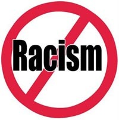

2009-03-04 08:00
Friends of Israel have been a little touchy about the upcoming UN Review Conference on racism" nicknamed “Durban II”), dubbed Durban II, and its resolutions. Israel plans to boycott the conference and several of its friends, including the U.S. and Canada, have stepped back considerably from endorsing the conference. Although it will attend as an observer, the U.S. has abandoned efforts to continue to shape the draft resolutions. In doing so, the United States made the right decision, and for the right reasons.
The Durban II document blasts xenophobia toward foreigners in general terms. It mentions discrimination against immigrants without identifying particular nations. It deplores propaganda used against foreigners vaguely. It expresses shock at tribal and ethnic violence, once again without so much as a mention of a continent. The document says that militias should not be used to terrorize minorities - where? It suggests that victims of slavery might have some justification for seeking recourse to reparations (a view which President Obama has opposed). It complains that the global War against Terror has given rise to racial profiling and human rights abuses, including spying on people in their places of worship. If this had been a much shorter document of universal principles, it would have meant the same thing to all countries.
But on about the 8th page the document dutifully deplores the Holocaust, then launches into a full page of criticisms of Israel. The word “Zionism” does not appear in any draft resolution (despite distortions by Israel and its policy defenders in the U.S.) and only the facts of Israel’s occupation of the West Bank and Gaza, as well as its discrimination toward its own Arab citizens, are condemned. The document criticizes Israel’s “Law of Return” as a racial law, which is indisputable since the law pertains only to Jews or in-laws of Jews. And who can rationally dispute the facts of Israel’s occupation – facts documented for decades? Everything on that page was true.
But Israel is the only country that is specifically singled out for criticism, and for all the committee-generated verbiage, the Durban II document lacks the courage to target any specific human rights abuses other than those in Palestine and Israel. There are also quite a few missed opportunities. On about page 16 it calls for an end to discrimination based on sexual orientation, but fails to identify the countries with the worst records of persecution of gays (Iran and Saudi Arabia come to mind). The document goes on to encourage the recognition of international bodies and discusses UN procedures and bodies, but in none of the remaining 30 pages are any countries other than Israel ever mentioned by name.
It is regrettable that the United States decided to walk away from the draft process after several dozen revisions, but it did try. Other points might have been added to the document – expressions of concern for the treatment of native people in the U.S., Brazil and Tibet, or concern for the persecution of Uighurs in China might have been added. The treatment of religious and ethnic minorities in Islamic countries, Venezuela, the treatment of Baha’i or Kurds in various countries, or the treatment of foreign workers or religious minorities in Saudi Arabia, could all have been mentioned as well. Of course, by naming names and naming crimes for each of the 195 nations of the earth, the draft document would have been tens of thousands of pages long.

While Israel and several pro-Israel organizations in the United States rejoiced in the State Department’s seeming rejection of anti-Semitism, there is a more obvious truth: The Durban II document was simply a mess. In fact, the word “anti-Semitism” was absent from State Department spokesman Robert Wood’s explanation for the rejection of the document.
It may be true that the United States is not eager to pay reparations, doesn’t welcome criticism, and doesn’t want to criticize its friends - which includes not only Israel, but Saudi Arabia and China. But another truth is that the Durban II outcomes document, by failing to hold none of the nations of the world accountable for racism and human rights abuses (with the notable exception of one), is also a document that means nothing.
The U.S. actually did the right thing.